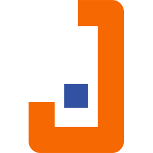
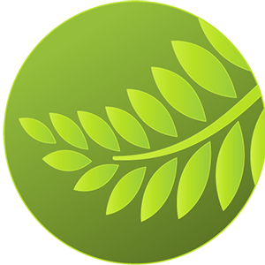
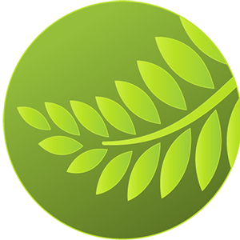
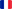

Professional Projects
Internship at IRIT (March-August 2021)
Goal: Designing, training and evaluating a Deep Learning model (using siamese networks and LSTM), in order to propose an automatic correction based on pronunciation (rather than spelling), linked to a keyboard interface in Java Swing. This type of keyboard could make typing easier for dysorthographic people.
Context: Final year internship for my master's degree in IT (specialty Artificial Intelligence and Pattern Recognition) at Paul Sabatier University.
Final grade: 15.5/20 (77.5/100)
Research project at Paul Sabatier University / IRIT (April-May 2019)
Goal: Implementing in Java an Artificial Intelligence (A* algorithm) to make two Lego NXT robots collaborate, one being autonomous, the other being remote-controlled (with a Java Swing interface), avoiding collisions to carry out a common task and following their trajectory on a map.
Context: Work in two-person team, final internship for my bachelor's degree in IT at Paul Sabatier University.
Tools:

Final grade: 16/20 (80/100)
Internship at Institute Clément Ader (April-June 2018)
Goal: Complete redesign of the ICA website, using WordPress, to modernise its appearance, restructure its data base and improve or even complete its features (with intranet administration pages among others).
Context: Work in two-person team, final year internship for my technology degree in IT at Paul Sabatier University Institute of Technology.
Tools:
 

Final grade: 17/20 (85/100)

 Français
Made with by Benoît Pannetier © 2022
Finding Space by Takahiro Sakamoto